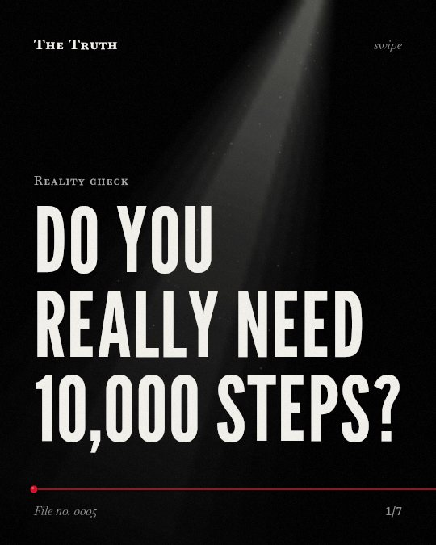

Reality check
Do you really need 10,000 steps?

Health benefits begin well below 10,000 steps.
More than 3,867 steps per day is linked to a reduced risk of all-cause mortality. Benefits are present at levels much lower than the common goal.
Established. Several studies combined, or official data. The evidence backs this.
What the research found
More than 3867 steps per day is linked to a reduced risk of all-cause mortality, and more than 2337 steps per day is linked to a reduced risk of CV mortality.
“more the better over the cut-off point of 3867 steps/day for all-cause mortality and only 2337 steps for CV mortality.”
Meta-analysis, 2023. Banach et al., European Journal of Preventive Cardiology.
In accelerometer-based studies, the third quartile of 8959 steps/day was linked to a 40.36% lower risk of all-cause mortality than the first quartile of 4183 steps/day.
“the third quartile had a 40.36% lower risk of all-cause mortality and a 35.05% lower risk of cardiovascular event than the first quartile (all-cause mortality: Q1 = 4183 steps/day, Q3 = 8959 steps/day; cardiovascular event: Q1 = 3500 steps/day, Q3 = 9500 steps/day; respectively).”
Meta-analysis, 2021. Sheng et al., Journal of sport and health science/Journal of Sport and Health Science.
Walking an additional 1000 steps per day is linked to lower risk of all-cause mortality and CVD morbidity and mortality in adults, and health benefits are present below 10,000 steps per day.
“walking an additional 1000 steps per day can help lower the risk of all-cause mortality, and CVD morbidity and mortality in adults, and that health benefits are present below 10,000 steps per day.”
Systematic review, 2020. Hall et al., International Journal of Behavioral Nutrition and Physical Activity. This shows a link, not a cause.
7000 steps per day is linked to clinically meaningful improvements in health outcomes and might be a more realistic and achievable target for some.
“7000 steps per day is associated with clinically meaningful improvements in health outcomes and might be a more realistic and achievable target for some.”
Meta-analysis, 2025. Ding et al., The Lancet Public Health.
Taking more steps per day is linked to a progressively lower risk of all-cause mortality, up to a level that varied by age.
“Taking more steps per day was associated with a progressively lower risk of all-cause mortality, up to a level that varied by age.”
Meta-analysis, 2022. Paluch et al., The Lancet Public Health.
For older adults, taking more daily steps was linked to a progressively decreased risk of CVD.
“For older adults, taking more daily steps was associated with a progressively decreased risk of CVD.”
Meta-analysis, 2022. Paluch et al., Circulation.
The threshold for mortality reduction is lower.
Evidence shows that taking more than 2,337 steps per day is linked to a reduced risk of cardiovascular mortality. 7,000 steps per day is linked to clinically meaningful health outcomes.
The 10,000-step goal may be unnecessary.
That may be why your current movement matters more than a specific, high number. You do not need to reach a high target to see a link to lower mortality.
This part is our reading of the evidence, not a finding.
Walking to the corner store.
You walk to the shop to buy milk. You turn back. You are moving. These small movements contribute to your health outcomes every day.
The honest summary
The evidence consistently shows that while more steps are generally better for mortality and cardiovascular health, the benefits are significant at much lower thresholds than the common 10,000-step goal.
The shape of the dose-response relation is not yet clear, and some studies lack age-specific analysis or have low certainty for specific outcomes like cancer or falls.
Why are you still chasing a number that doesn't matter?
Sources
- Amanda E. Paluch, Shivangi Bajpai, David R. Bassett et al. (2022). Daily steps and all-cause mortality: a meta-analysis of 15 international cohorts. The Lancet Public Health. Meta-analysis, cited 602 times.
- Maciej Banach, Joanna Lewek, Stanisław Surma et al. (2023). The association between daily step count and all-cause and cardiovascular mortality: a meta-analysis. European Journal of Preventive Cardiology. Meta-analysis, cited 245 times.
- Katherine S. Morris Hall, Eric T. Hyde, David R. Bassett et al. (2020). Systematic review of the prospective association of daily step counts with risk of mortality, cardiovascular disease, and dysglycemia. International Journal of Behavioral Nutrition and Physical Activity. Systematic review, cited 371 times.
- Mingxin Sheng, Junyue Yang, Min Bao et al. (2021). The relationships between step count and all-cause mortality and cardiovascular events: A dose–response meta-analysis. Journal of sport and health science/Journal of Sport and Health Science. Meta-analysis, cited 79 times.
- Ding Ding, Binh Nguyen, Tracy Nau et al. (2025). Daily steps and health outcomes in adults: a systematic review and dose-response meta-analysis. The Lancet Public Health. Meta-analysis, cited 124 times.
- Amanda E. Paluch, Shivangi Bajpai, Marcel Ballin et al. (2022). Prospective Association of Daily Steps With Cardiovascular Disease: A Harmonized Meta-Analysis. Circulation. Meta-analysis, cited 119 times.
This file was researched and drafted by software, then checked by rules a model cannot talk its way around: each quote above was matched word for word against the paper, and every number had to appear in it. How files are made.